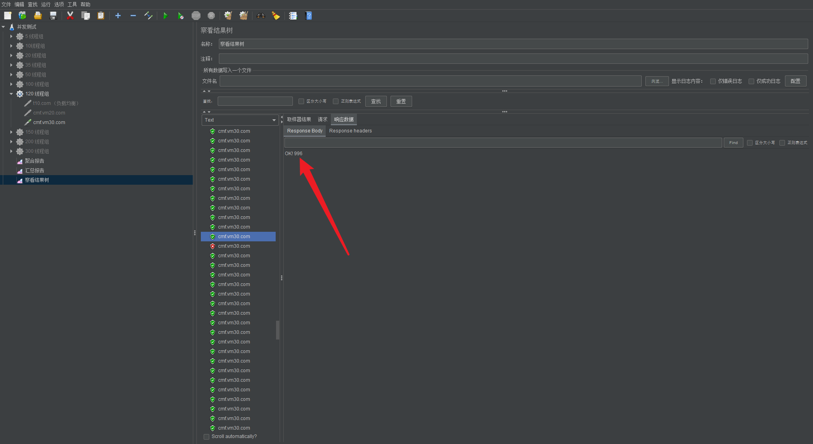

ThinkPHP5.1 如何使用 Redis 实现悲观锁
ThinkPHP 如何使用 Redis 实现悲观锁解决高并发情况下读写带来的脏读问题 / ThinkPHP5.1 / Redis Cache / File Cache 测试。
在用户量 / 客户端数量比较少的时候，只要系统的业务逻辑是正确的，一般都不会发现有什么问题。但随着用户量 / 客户端数量逐渐增多，高并发带来的问题就会逐渐出现，而脏读是众多问题的其中之一。
一、无并发控制，会带来什么问题？
本文以 ThinkPHP5.1.39 的代码作为案例，下面是一个 File Cache 读写操作：
public function fileCacheCase(){
$keyName = "test";
$keyValue = 996;
//写入缓存
Cache::set($keyName, $keyValue, 3600);
//从缓存中获取值
$data = Cache::get($keyName);
//删除缓存
Cache::rm($keyName);
echo "OK! $data";
}
访问这个 function，会输出 OK! 996 。无论你访问几次，结果都是如此，但仅限于单线程的情况（只有你自己一个人在访问这个 function），如果是多个人同时不停的访问这个 function，还会是这样吗？想一想 😛
使用 jmeter 测试一下，120 线程测试了十几秒，发现了 3 种不同的返回结果。
1.1、返回了 OK! 996
与单线程时的结果一致，是正常处理逻辑。

1.2、只返回了 OK！而不是 OK! 996

说明缓存不存在，原因是：在 A 线程将 996 写入缓存后，B 线程将缓存删除了。此时 A 线程从缓存中读出来的数据为 null，所以 A 线程输出了 OK! ，而不是 OK! 996。
1.3、返回了一个 500 错误

报错的内容是： file_get_contents（…）No such file or directory。

显然是 cache 文件夹下的某个缓存文件不存在，所以引起了这个错误。原因是：A 线程在删除缓存后，B 线程也在执行删除缓存的操作。当缓存文件已被删除时，再执行删除缓存文件的操作，自然就报了文件不存在的错误。（实测 120 个线程并发，总计 500 个请求，异常率 0.20%）
尽管我修改了 File Cache 的 133 行，在删除前判断文件是否存在，虽然异常率降低了，但依然无法从根本上解决问题。可以看到的是，在高并发场景下，问题已经显现出来了。
下面我们用 redis 缓存试试看：
public function fileCacheCase(){
$keyName = "test";
$keyValue = 996;
//写入缓存
Cache::store('redis')->set($keyName, $keyValue, 3600);
//从缓存中获取值
$data = Cache::store('redis')->get($keyName);
//删除缓存
Cache::store('redis')->rm($keyName);
echo "OK! $data";
}
经过测试，与上面的 3 种情况一致。（根据 thinkphp5.1 的官方文档，我使用的是 store 来切换到 redis，但不知道为何，仍然会报 File Cache 驱动的 No such file or directory/unlink 错误，十分诡异）。
如何解决高并发场景下带来的脏读问题？
答案是：使用锁机制。
二、关于锁机制
根据锁的控制范围，可分为单机锁 / 分布式锁 2 种。根据锁的实现思想，可分为悲观锁 / 乐观锁 2 种。
2.1、单机锁
即为单机环境的锁，无分布式设计。
常用的实现工具：
- Redis
- Memcached
2.2、分布式锁
为了防止分布式系统中的多个进程之间相互干扰，我们需要一种分布式协调技术来对这些进程进行调度。而这个分布式协调技术的核心就是来实现这个分布式锁。
- 在分布式系统环境下，一个方法在同一时间只能被一个机器的一个线程执行
- 高可用的获取锁与释放锁
- 高性能的获取锁与释放锁
- 具备锁失效机制，防止死锁
- 具备非阻塞锁特性，即没有获取到锁将直接返回获取锁失败
常用的实现工具：
- Zookeeper
- Redis
- Memcached
- Chubby
2.3、悲观锁
总是假设最坏的情况，每次去拿数据的时候都认为别人会修改，所以每次在拿数据的时候都会上锁，这样别人想拿这个数据就会阻塞直到它拿到锁（共享资源每次只给一个线程使用，其它线程阻塞，用完后再把资源转让给其它线程）。传统的关系型数据库里边就用到了很多这种锁机制，比如行锁，表锁等，读锁，写锁等，都是在做操作之前先上锁。Java 中 synchronized 和 ReentrantLock 等独占锁就是悲观锁思想的实现。
2.4、乐观锁
总是假设最好的情况，每次去拿数据的时候都认为别人不会修改，所以不会上锁，但是在更新的时候会判断一下在此期间别人有没有去更新这个数据，可以使用版本号机制和 CAS 算法实现。乐观锁适用于多读的应用类型，这样可以提高吞吐量，像数据库提供的类似于 write_condition 机制，其实都是提供的乐观锁。在 Java 中 java.util.concurrent.atomic 包下面的原子变量类就是使用了乐观锁的一种实现方式 CAS 实现的。
2.5、如何选择悲观 / 乐观锁？
从上面对两种锁的介绍，我们知道两种锁各有优缺点，不可认为一种好于另一种，像乐观锁适用于写比较少的情况下（多读场景），即冲突真的很少发生的时候，这样可以省去了锁的开销，加大了系统的整个吞吐量。但如果是多写的情况，一般会经常产生冲突，这就会导致上层应用会不断的进行 retry，这样反倒是降低了性能，所以一般多写的场景下用悲观锁就比较合适。
三、Redis 实现悲观锁
在商品秒杀活动活动中，流量峰值相对平常时的流量是高出非常多的。使用 Redis 实现悲观锁机制，可以解决商品库存脏读的问题。
初始化库存：
public function stockInit()
{
$key = "stock";
$stockInit = 699;
//清空所有缓存
Cache::clear();
Cache::store('redis')->clear();
//写入库存初始值
Cache::store('redis')->set($key, $stockInit);
echo 'stock Init';
}
3.1、悲观锁实现（一）非最佳实践
看似符合逻辑的商品秒杀：
public function flashSale()
{
$key = "stock";
$lockSuffix = "_lock";
//判断库存锁是否存在
while (Cache::get($key . $lockSuffix) == true) {
// 存在锁定则等待
usleep(200000);
}
//库存上锁
Cache::store('redis')->set($key . $lockSuffix, 1, 30);
//获取库存值
$stock = Cache::store('redis')->get($key);
//减库存
if ($stock > 0) {
$temp = $stock;
$stock -= 1;
} else {
//打开库存锁
Cache::store('redis')->set($key . $lockSuffix, false);
return "已售罄";
}
Cache::store('redis')->set($key, $stock);
//打开库存锁
Cache::store('redis')->set($key . $lockSuffix, false);
return "恭喜，您抢到了第 {$temp}个库存！";
}
实测 150 线程并发，异常率 0%，虽然引用了锁机制，看似符合逻辑的锁机制，但仍会有极低的概率脏读，原因无他，有 N 个线程同时抢到了锁。虽然概率低，但线程一多仍然会脏读。所以需要改用 redis 原生支持的 setnx 来保证只有一个线程抢到了锁。
如下，两个线程同时抢到了第 80 个库存：
3.2、悲观锁实现（二）
setnx 是 set if not exists 的简写，在 key 不存在时等价于 set，如果 key 存在，则不更新缓存内容，且返回 false。使用这个特性，可以保证锁只有一个线程抢到了。
使用 redis setnx 实现悲观锁的商品秒杀：
public function flashSale()
{
$redisConifg = config('cache.redis'); //获取当前模块下的config文件夹中的cache文件的redis配置数组
$redis = Cache::connect($redisConifg); //获取thinkPHP官方封装的Redis Cache对象
$handler = Cache::connect($redisConifg)->handler();//获取php redis扩展原生redis对象 https://github.com/phpredis/phpredis
$key = "stock";//商品库存缓存名
$lockSuffix = "_lock";//商品库存锁后缀名
$timeOut = 10; //库存锁过期时间
//抢库存锁
while ($handler->set($key . $lockSuffix, 1, ['nx', 'ex' => $timeOut]) == false) {
// 没有抢到则等待
usleep(20000);
}
//当前线程抢到库存锁了
//获取库存值
$stock = $redis->get($key);
//减库存
if ($stock > 0) {
$temp = $stock;
$stock -= 1;
} else {
//删除库存锁
$redis->rm($key . $lockSuffix);
return "已售罄";
}
//更新库存值
$redis->set($key, $stock);
//删除库存锁
$redis->rm($key . $lockSuffix);
return "恭喜，您抢到了第 {$temp}个库存！";
}
150 线程并发测试后，并没有发现有异常情况了。根据实际业务需求，可以增加等待超时机制。
四、REF
https://github.com/phpredis/phpredis#set